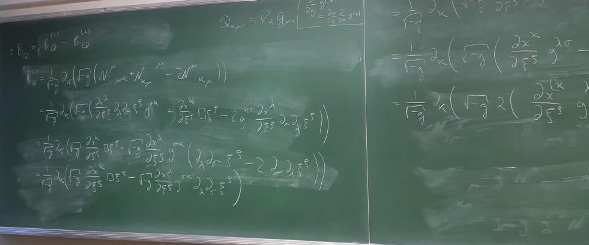

Research Overview
Current Work
My research is broadly based on investigating novel theories of gravity that differ from General Relativity. Specifically, I'm interested in looking at models that break Lorentz invariance or are not invariant under general spacetime coordinate transformations (or diffeomorphisms). I look at the importance of these symmetries in metric-affine theories of gravity, such as in modified teleparallel gravity, and their relation to high-energy physics and quantum gravity.
As well as studying the mathematical properties of these models, I'm particularly interested in their phenomenology. Theories of modified gravity would have direct implications for both cosmology and astrophysics, especially when considering regimes where gravity plays a major role (i.e. strong gravity regimes such as the early universe, black holes, compact objects, etc). For this reason, I'm interested in exact solutions in cosmological and black hole spacetimes. For example, some of the cosmological models I'm currently working on replace the initial big-bang singularity with a 'bounce' type scenario, thereby avoiding some of the associated problems, whilst still replicating the same big-bang evolution afterwards. Some of these models also naturally lead to a universe that undergoes accelerated expansion without needing any kind of exotic matter source.
A useful tool to investigate these different models is by using dynamical systems analysis. In cosmological scenarios, using a dynamical systems approach is an effective way to show the early and late time behaviour of models. For example, in the standard GR case of a universe filled with a perfect fluid, the late-time stable attractor is the de-Sitter solution: the accelerating expanding solution dominated by a cosmological constant. For metric-affine modified theories of gravity, examining the dynamical phase space can be a useful tool in assessing the validity of opposing models.
Overall, the aim is to find modifications of General Relativity that can solve some of the major problems it currently faces: the nature of dark matter and dark energy, the problem of singularities, and its resistance to quantization and unification with the Standard Model. Failing these grandiose goals, I hope to make positive contributions within the field of modified gravity and cosmology. For more details on my current work, see my publications here.

What some typical calculations look like: boundary terms arising metric-affine modifed gravity.